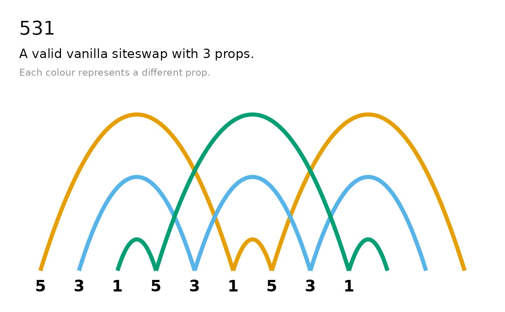
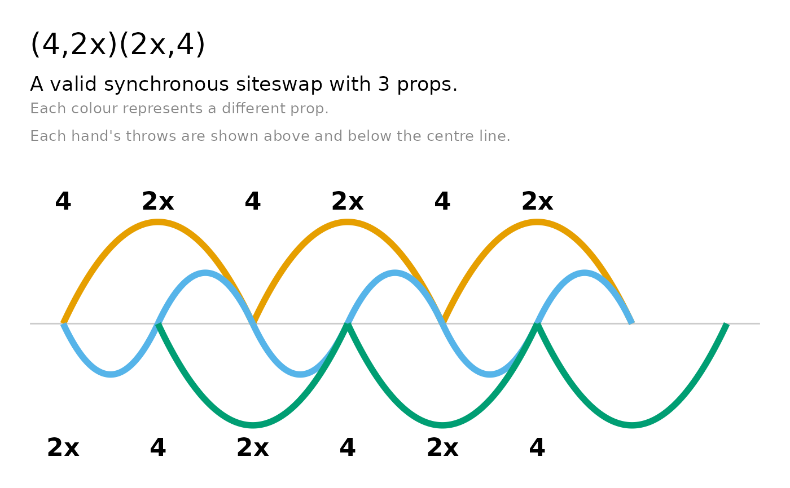
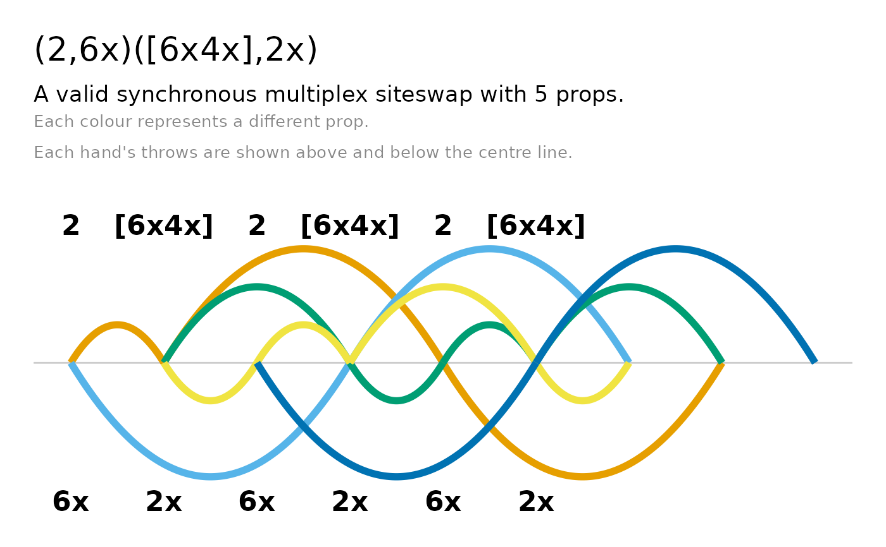
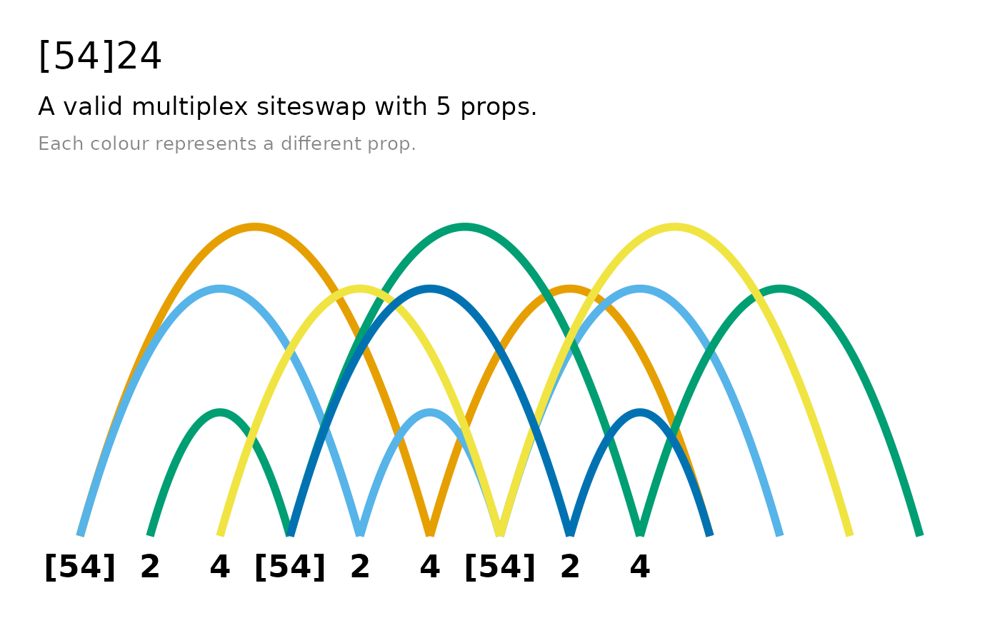
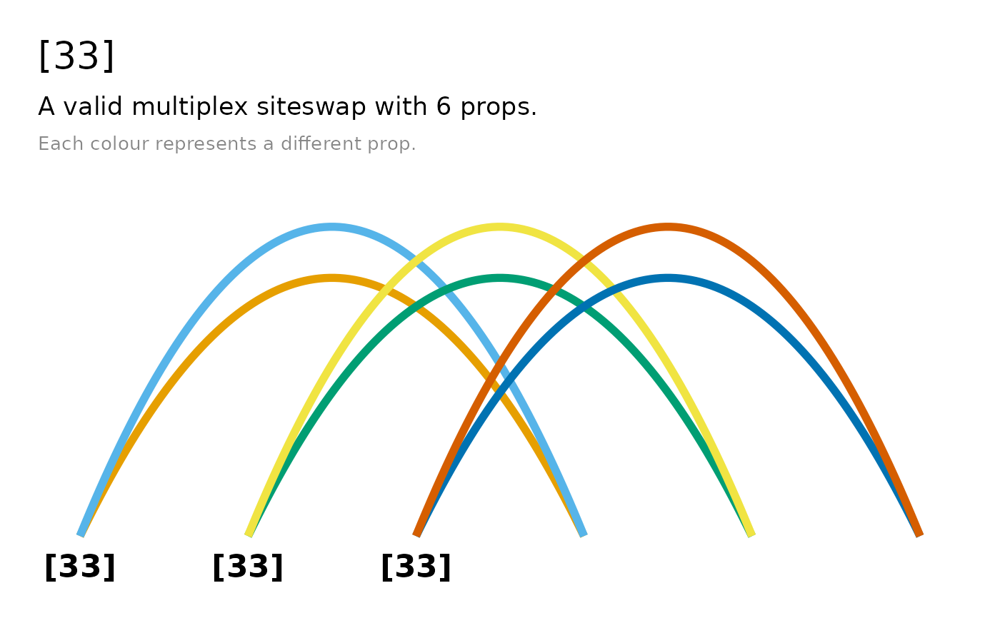
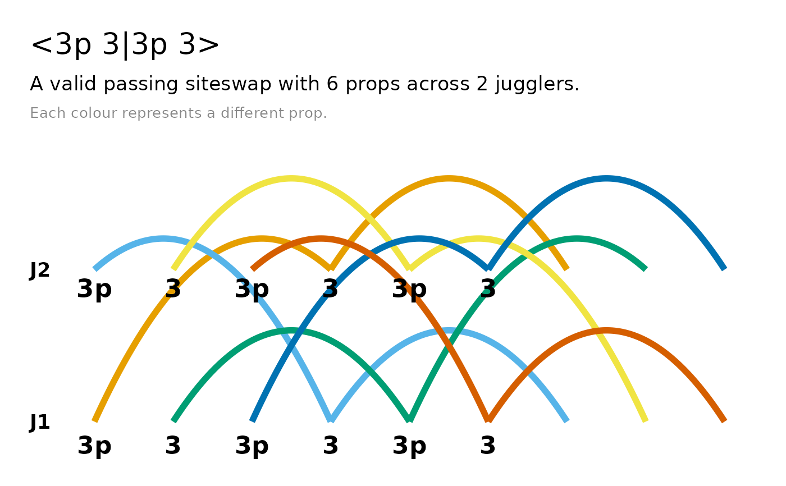
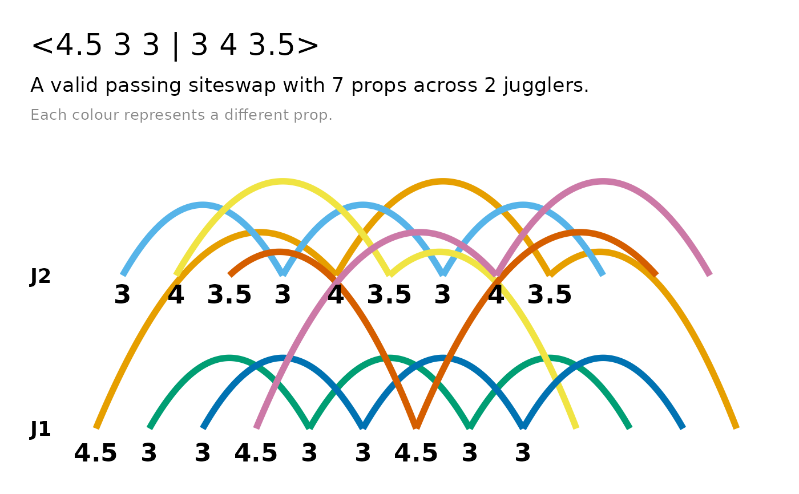
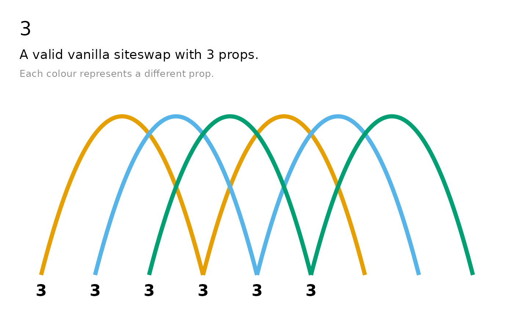
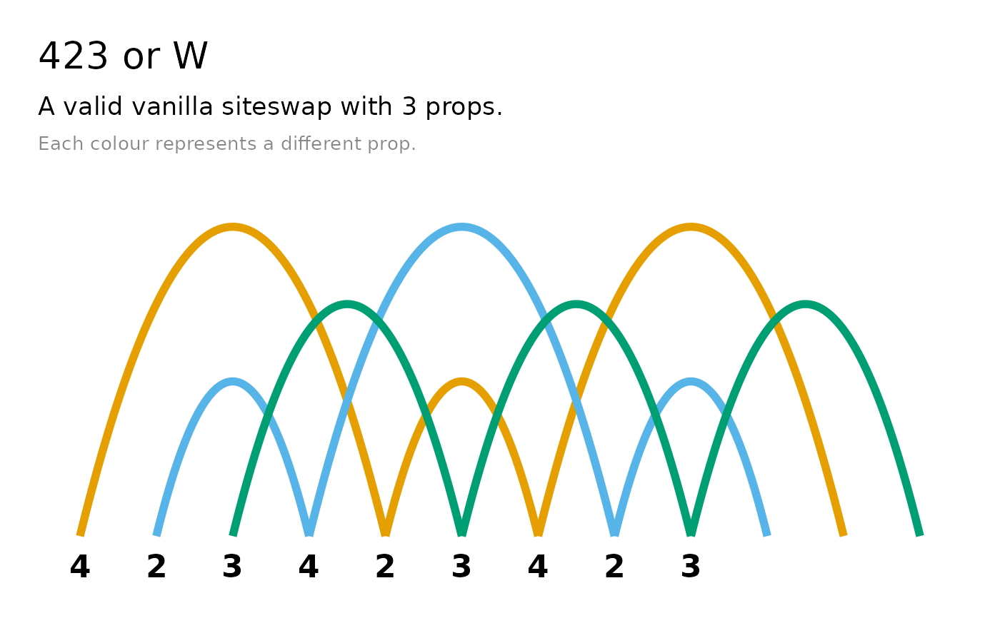

Produces a timeline (arc) diagram showing the trajectory of each prop across beats. Each arc represents a throw, with height proportional to the throw value and coloured by prop using the colour-blind-friendly Okabe-Ito palette (a ggplot2 default scale is used beyond seven props). The x-axis labels show the throw heights from the siteswap sequence.
Arguments
- siteswap
A vanillaSiteswap, synchronousSiteswap, multiplexSiteswap, synchronousMultiplexSiteswap, or passingSiteswap object.
- n_cycles
Number of complete cycles to simulate (default 3). A warning is issued if not all props appear within the simulated range.
- title
Logical. If
TRUE(default), adds a title showing the siteswap sequence. Set toFALSEto suppress; override withggplot2::labs()on the returned plot.- subtitle
Logical. If
TRUE(default), adds a subtitle showing the siteswap type and number of props. Set toFALSEto suppress; override withggplot2::labs()on the returned plot.- ...
Additional arguments passed to methods.
Details
timeline() is an S7 generic. There are methods available for the following
classes:
See Behaviour by siteswap type section below for details on the differences between the resulting plots.
The result is a standard ggplot2 object, so beyond the title and subtitle
toggles you can modify it by adding any ggplot2 function, for example
ggplot2::labs() or ggplot2::scale_colour_manual().
Behaviour by siteswap type
Vanilla and multiplex patterns are drawn single-sided, with all arcs above a single baseline. The x-axis labels are the throw heights, and multiplex labels keep their slot brackets (for example
[54]).Synchronous and synchronous multiplex patterns are drawn two-sided: one hand's arcs sit above a faint centre line and the other hand's arcs sit below it. Each hand gets its own x-axis labels, and the subtitle notes the two-sided layout.
Multiplex patterns (synchronous or not) that throw two or more identical props on the same beat fan those arcs to slightly different peak heights, so otherwise-overlapping throws render as concentric parabolas.
Passing patterns are drawn with one lane per juggler; passes arc between lanes. Fractional notation offsets the beat positions accordingly.
See also
The siteswap constructors, e.g. siteswap() and vanillaSiteswap().
Other siteswap visualisation:
ladder(),
throw_data()
Examples
# Vanilla: single-sided arcs
timeline(siteswap("423"))

# Synchronous: two-sided, hands mirrored about a centre line
timeline(siteswap("(4,2x)(2x,4)"))

timeline(siteswap("(2,6x)([6x4x],2x)"))

# Multiplex: identical simultaneous throws fan to distinct heights
timeline(siteswap("[54]24"))

timeline(siteswap("[33]"))

# Passing: one lane per juggler, with passes arcing between them
timeline(siteswap("<3p 3|3p 3>"))

timeline(siteswap("<4.5 3 3 | 3 4 3.5>"))

# Increasing n_cycles helpful for sequences with short period
timeline(siteswap("3"), n_cycles = 6)

# ggplot2 object: customise like any other plot
timeline(siteswap("423")) + ggplot2::labs(title = "423 or W")
